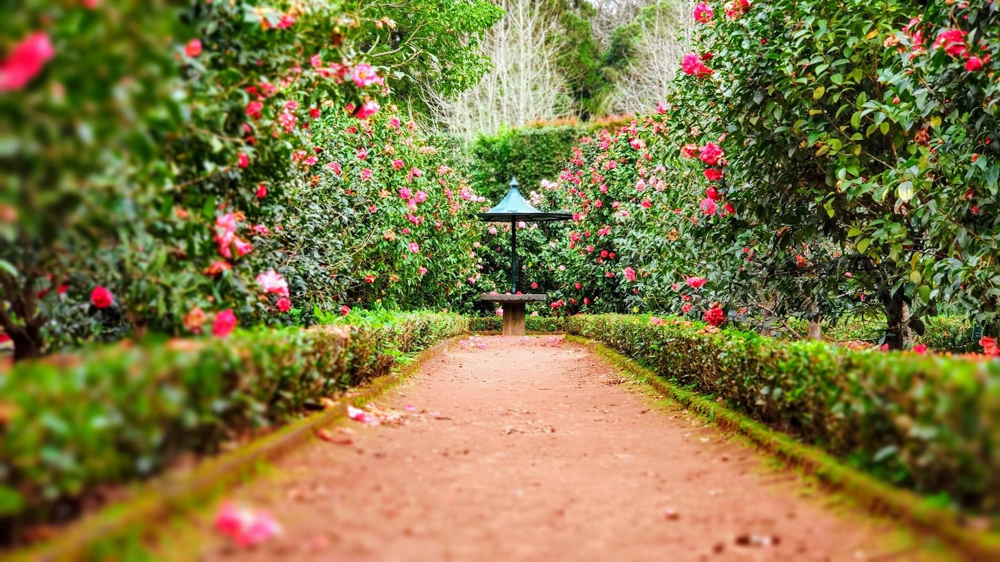
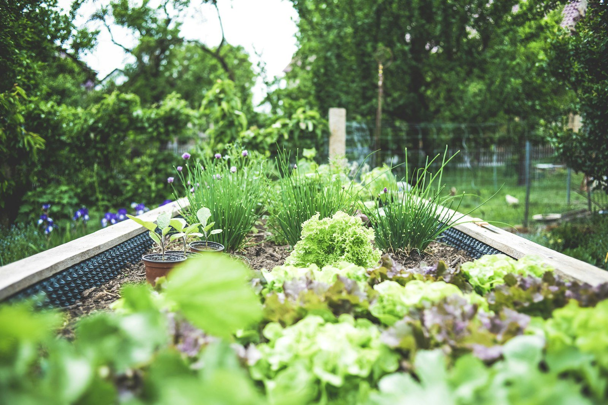

De la conception d'un jardin a son entretien toute l'annee, un savoir-faire complet du paysage.
Conception sur mesure : plan, choix des essences mediterraneennes, terrassement et plantation. Un jardin pense pour durer.
Terrasses, allees, murets en pierre seche, eclairage et points d'eau. On structure l'espace exterieur de A a Z.
Taille des arbres et haies, tonte, desherbage, soin des oliviers. Contrats annuels pour un jardin toujours net.
Arrosage automatique econome, recuperation d'eau, terrasses et toitures vegetalisees adaptees au climat du Sud.
